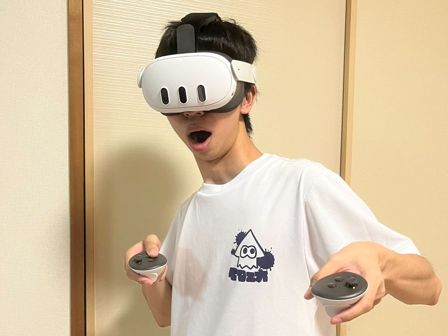

自己紹介

堀江諒
東京科学大学 大学院 工学院 電気電子系電気電子コース
好きなこと
- 「面白い」と思えるようなものつくり
- ゲーム(特に戦略性があるゲーム・ストーリーに奥深さがあるゲーム)
- 体を動かすこと(ボルダリングや卓球)
- 行ったことのないところへの旅行
これまでの活動
受賞履歴
- コンテスト名: NHK学生ロボコン2023大会
- 結果: 本選出場・マブチモーター株式会社賞を受賞
- 役職: 制御班リーダー・チームリーダー
- コンテスト名: NHK学生ロボコン2024大会
- 結果: 本選出場・マブチモーター株式会社賞を受賞
- 役職: 制御班・プロジェクトリーダー
- コンテスト名: キャチロボバトルコンテスト第15回
- 結果: 審査員特別賞受賞
- 役職: 制御担当
- コンテスト名: 魔改造の夜第9回「おトイレ ゆか 宙返り」
- 結果: 優勝
- 役職: 制御担当
学歴
2018-2021
サレジオ学院高等学校
卓球部に所属し、部長を務めた
2021-2025
東京科学大学
(旧東京工業大学)
(旧東京工業大学)
電気電子系に所属し、環境電磁工学を専攻
「ロボット技術研究会」に所属し、NHK学生ロボコンチーム「Maquinista」のロボットの制御およびチームの代表を経験
アルバイトでは接客業、長期インターンとして物流会社でのエンジニア、ゲーム会社でのエンジニアを経験
2025-2027
東京科学大学大学院
大学と同じ研究室に所属し、環境電磁工学を専攻しリバブレーションチャンバーのシミュレーション精度に関する研究をしている